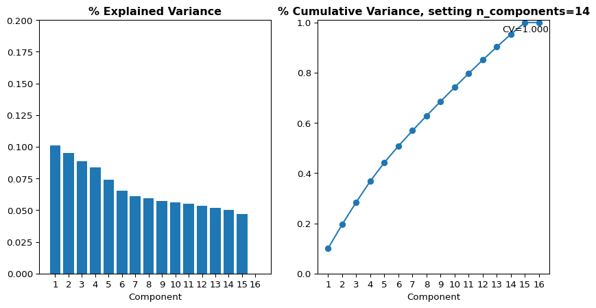
1 RR9 Retina Dataset Integration
1.1 Digital Twin Project Description
Space biology confronts a critical obstacle: the challenge of incomplete data due to the logistical complexities and high costs of space missions. Addressing this issue, this research presents strategies that integrate AI and digital twin technology to overcome the limitations posed by sparse datasets in space biology research.
By presenting a cohesive strategy that combines synthetic data generation, automatic labeling, and advanced machine learning with digital twins, we showcase an application to the RR9 dataset at OSDR. This research aims to overcome the challenge of data scarcity in space biology, thereby forging a way to unlock insights into the potential of life beyond Earth.
1.2 RR9 Background
The Rodent Research 9 payload consisted of three space biology experiments designed to examine impacts of long-duration spaceflight on visual impairment and joint tissue degradation that affect astronauts.
| Investigation | Purpose | Experiments |
|---|---|---|
| Investigation 1 | Effects of microgravity on fluid shifts and increased fluid pressures that occur in the head. | 1. To determine whether spaceflight on the ISS alters rodent basilar artery spontaneous tone, myogenic and KCl (Potassium Chloride)-evoked vasoconstriction, mechanical stiffness and gross structure. 2. To estimate whether spaceflight on the ISS alters the blood-brain barrier in rodents, as indicated by ultrastructural examination of the junctional complex of the cerebral capillary endothelium. 3. To determine whether spaceflight on the ISS alters rodent basal vein (inside cranium) and jugular vein (outside cranium) spontaneous tone, myogenic and KCl-evoked constriction, distension, and gross structure. 4. To determine whether spaceflight on the ISS alters the ability of the cervical lymphatics to modulate lymph flow, and thus, regulate cerebral fluid homeostasis. |
| Investigation 2 | Impact of spaceflight on the vessels that supply blood to the eyes. | 1. Define the relationships between spaceflight condition-induced oxidative stress in reactive oxygen species (ROS) expression and retinal vascular remodeling and BRB function in mice return to Earth alive. 2. Determine whether spaceflight condition-induced oxidative damage in retina is mediated through photoreceptor mitochondrial ROS production. |
| Investigation 3 | Extent of knee and hip joint degradation caused by prolonged exposure to weightlessness. | 1. Determine the extent of knee and hip joint degradation in mice after 30 days of spaceflight on the ISS. 2. Use the DigiGait System to assess gait patterns before and after returning from the ISS. |
We are interested in the Retinal data and all things related to Eye. So, all the experiments related to Investigation 1 and 2 will be studied here. Below is the table of all OSD identifiers related to above investigations obtained from https://osdr.nasa.gov/bio/repo/data/payloads/RR-9
| Identifier | Title | Factors | Assay Types |
|---|---|---|---|
| OSD-557 | Spaceflight influences gene expression, photoreceptor integrity, and oxidative stress related damage in the murine retina (RR-9) | Spaceflight | Bone Microstructure Molecular Cellular Imaging histology |
| OSD-568 | Characterization of mouse ocular responses (Microscopy) to a 35-day (RR-9) spaceflight mission: Evidence of blood-retinal barrier disruption and ocular adaptations | Spaceflight | Molecular Cellular Imaging |
| OSD-715 | Characterization of mouse ocular response to a 35-day spaceflight mission: Evidence of blood-retinal barrier disruption and ocular adaptations - Proteomics data | Spaceflight | protein expression profiling |
| OSD-255 | Spaceflight influences gene expression, photoreceptor integrity, and oxidative stress-related damage in the murine retina | Spaceflight | transcription profiling |
| OS-140 | Space Flight Environment Induces Remodeling of Vascular Network and Glia-Vascular Communication in Mouse Retina | Spaceflight | |
| OSD-583 | Characterization of mouse ocular responses (intraocular pressure) to a 35-day (RR-9) spaceflight mission: Evidence of blood-retinal barrier disruption and ocular adaptations | Spaceflight | Tonometry |
The purpose of this notebook is to combine all retina data from the Rodent Research 9 (RR9) mission from the NASA Open Science Data Repository, perform exploratory data analysis, impute missing data and train a digital twin.
Original Author: Lauren Sanders
Additional Author(s): Jian Gong, Vaishnavi Nagesh
1.3 Load Data
We are downloading all the relevant data as shown in the the table below.
::: {#cell-Load data Cell .cell execution_count=4}
| Loading ITables v2.4.4 from the internet... (need help?) |
:::
1.4 Data Exploration and Validation
The below table shows number of features in each dataset that constitute the RR9 multi-modal data. This is useful in identifying the maximum number of PCA components required to explain the cumulative variance in the dataset.
::: {#cell-Summarize Data .cell execution_count=6}
| Loading ITables v2.4.4 from the internet... (need help?) |
:::
1.5 Summary of the Merged Data frame
::: {#cell-Summarize Data Merged Data Frame .cell execution_count=7}
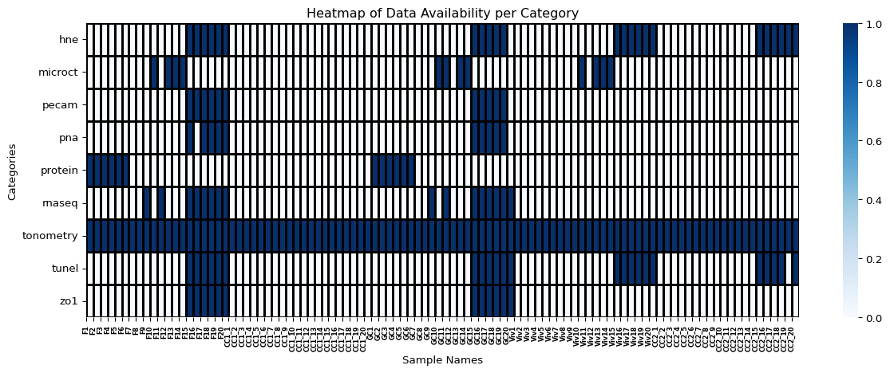
:::
1.6 PCA on Different Categories of Datasets
1.6.0.1 PCA on RNASeq
1.6.0.2 PCA on RNASeq for Only Predictive Genes for Phenotype
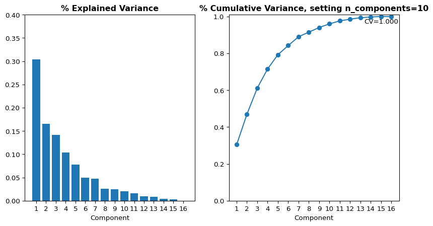
1.6.0.4 PCA on Proteomics
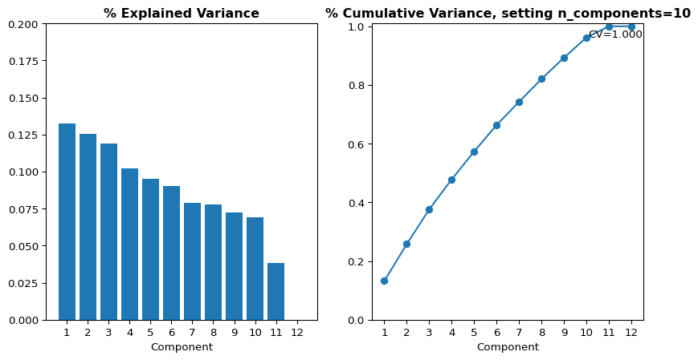
1.6.0.5 PCA on TUNEL Assay

1.6.0.6 PCA on HNE Immunostaining Micoscopy
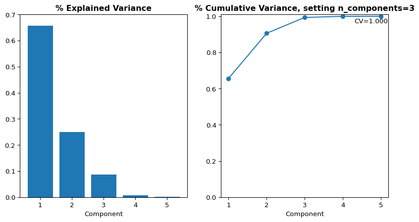
1.6.0.7 PCA on Micro CT
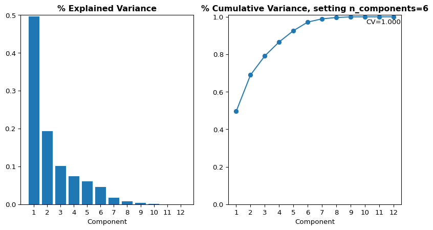
1.6.0.8 PCA on Combined Immunostaining Micoscopy data from Zo-1, PECAM, PNA and HNE
Zo-1, PECAM, PNA and HNE are all immunostaining microscopy. It would be useful to see if combining them all helps in better separation between the groups.
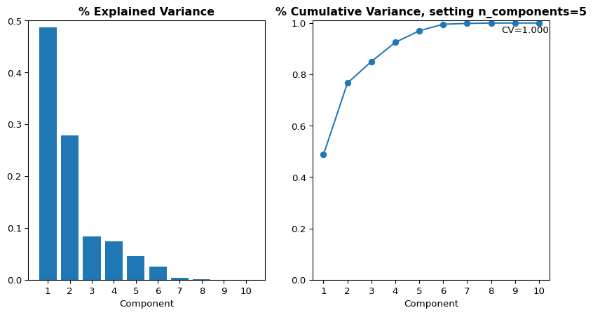
From the PCA analysis of different datasets, it seems like there is fair separation betwee flight and other groups. However, there isn’t sufficient data to show separation between GC, Viv and CC groups.
1.7 Data Analysis Correlation Between HNE and RNASeq
HNE Immunostaining microscopy has data across four different groups (F, GC, Viv, CC2) and RNASeq is available for two different groups (F and GC). Among these F15-F20 and GC15-20 have data for both HNE and RNASeq.
To be able to anchor the imputation of RNASeq data onto biological characteristic, the correlation between RNASeq and HNE needs to be determined.
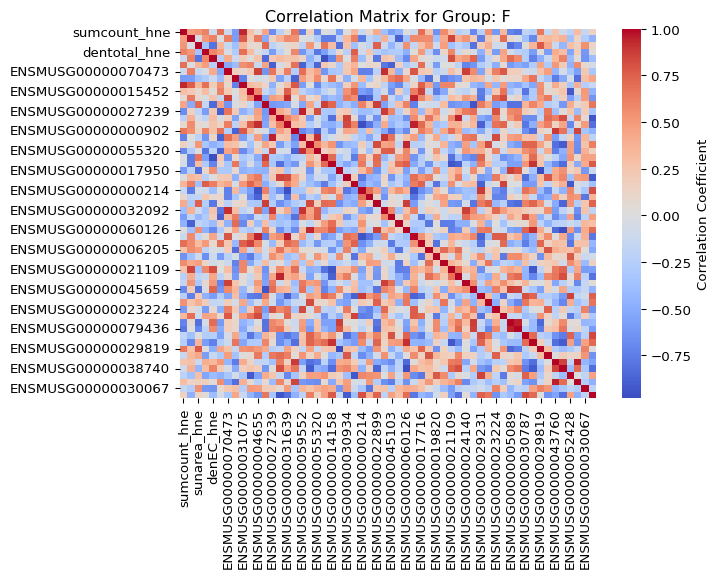
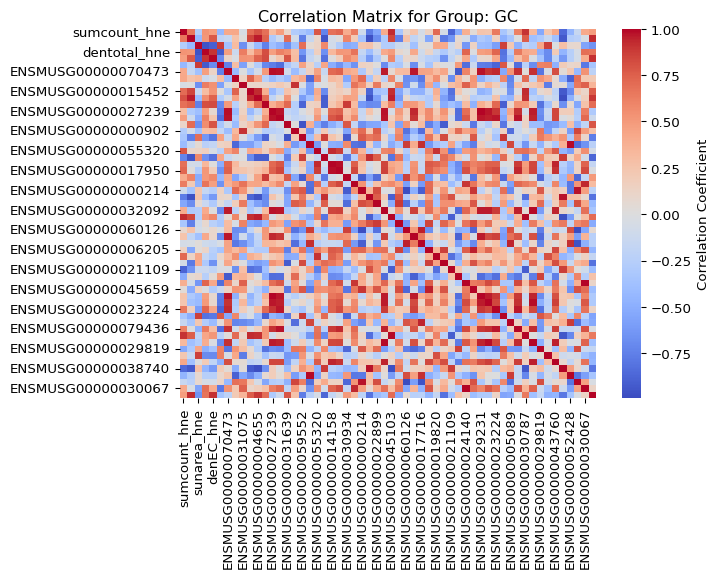
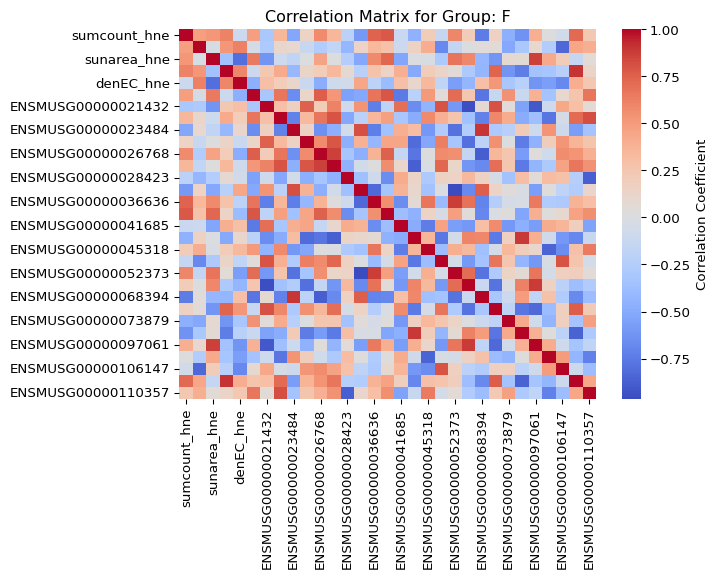
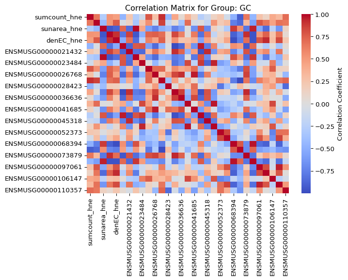
1.8 Data Analysis Correlation Between TUNEL Assay and RNASeq
The reason to select TUNEL for correlation analysis is that TUNEL assay points seem to separate out cleaner on the PCA plots than HNE data points between different groups. TUNEL Assay has data across four different groups (F, GC, Viv, CC2) and RNASeq is available for two different groups (F and GC). Among these F15-F20 and GC15-20 have data for both TUNEL and RNASeq.
To be able to anchor the imputation of RNASeq data onto biological characteristic, the correlation between RNASeq and TUNEL needs to be determined.
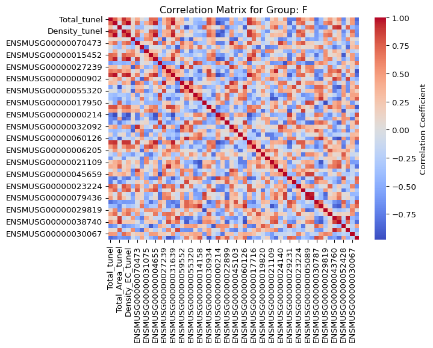
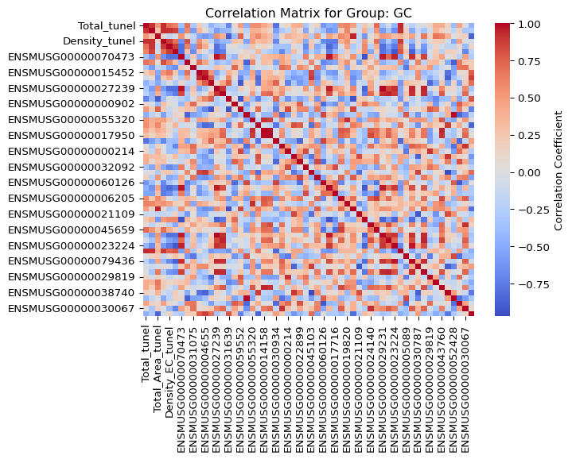
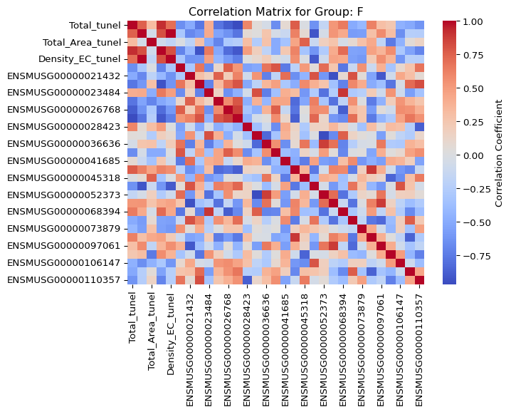
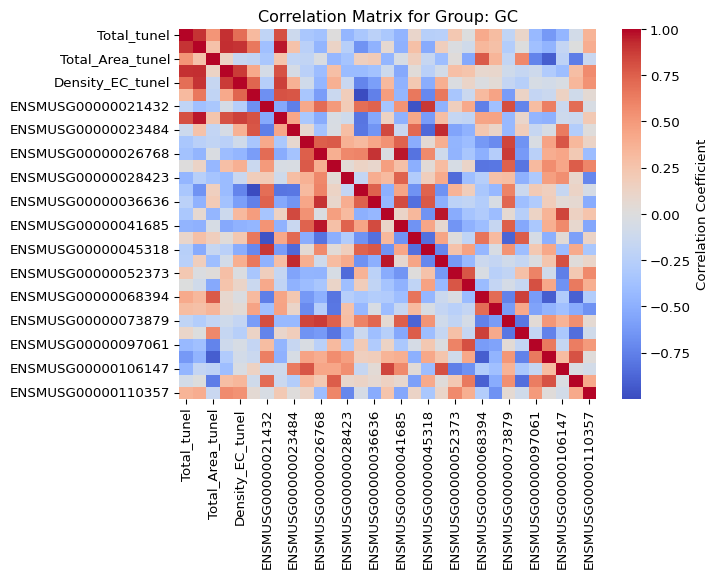
2 Imputation of Relevant Genes from Tunel data
First step is to see how many genes of the interested gene list do not have data. Imputation will be done in two groups: F(light) and not F(light). Samples F9 and F11 have RNASeq values, but not TUNEL assay values.